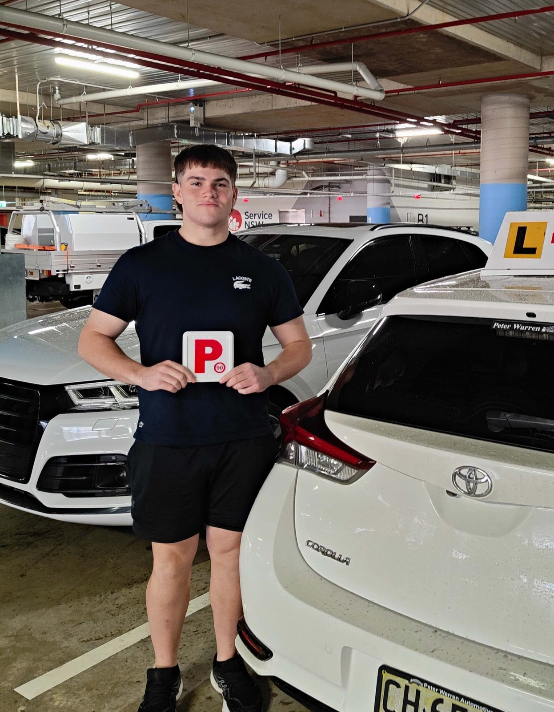

Local teaching built around South West Sydney roads and real learner routes.
About Driving School Liverpool Centre
Meet Your Liverpool Driving Instructor, Ashraf George
Ashraf George is a full-time, government-accredited driving instructor working across Liverpool and nearby South West Sydney communities — Fairfield, Cabramatta, Casula, Prestons, Chipping Norton, Moorebank and Edmondson Park. His teaching starts from one clear belief: every learner, regardless of age, background or confidence level, can build safe driving habits that last for life.


Transport for NSW authorised, ADTA member, Roads and Maritime aligned instruction.
National Police Check and Working with Children Check both completed and current.
Fully insured learner vehicles with instructor override for safer first lessons.

About Ashraf
Safe habits first. Licence results follow.
Ashraf teaches from Liverpool with a clear focus on long-term skill building. The aim is never only to help a student pass one test. It is to help them make better decisions at roundabouts, school zones, busy intersections, motorway entries and local suburban streets for the next twenty years.
That is why each lesson is structured, local and practical. Instead of filling hours with passive driving, sessions focus on the habits that matter most: observation technique, speed management, gap selection, parking judgement, calm decision-making under pressure and repeatable routines that hold up when conditions are harder than expected.
South West Sydney learners come from different backgrounds, speak different first languages and learn at different speeds. Ashraf meets each student where they are — a complete beginner near Liverpool CBD, a nervous learner picking up from Casula, a parent-supported teen in Prestons or a returning adult driver working around Chipping Norton, Moorebank and the Georges River corridor.
- Lessons structured around the real Liverpool roads each student will use.
- Safe habits that stay useful long after the driving test is over.
- Direct, calm coaching that works equally well for nervous and confident learners.
Full service range
Every driving lesson service offered from the Liverpool branch.
From a first nervous session on quiet residential streets to a pre-test warm-up on the Elizabeth Drive test corridor, every service is structured around the learner's specific stage and local conditions.

Beginner driving lessons
First lessons are built for students who have never driven before. Steering control, mirror habits, smooth braking, safe road positioning and low-pressure local residential driving come before any busier traffic is introduced. Each session unlocks the next stage at the student's pace. Progress is measured by skill readiness, not hours completed.

Automatic driving lessons
Automatic lessons remove gear-change pressure so students can focus entirely on observation, hazard perception, lane discipline, roundabout timing, gap selection and smoother decision-making. Ideal for beginners, nervous learners and adult returners who want to build confidence faster without manual transmission complexity. The dual-controlled vehicle gives the instructor full oversight from the passenger seat.

Driving test preparation
Pre-test lessons focus specifically on the Liverpool Service NSW Driver Testing Centre routes on Elizabeth Drive. That means Newbridge Road approaches from Moorebank, Hume Highway entry corridors from Casula, Orange Grove Road local circuits, school-zone timing, observation checkpoints and the roundabout sequences that appear in the actual assessment. Mock test sessions can be added for students who want a full dress rehearsal before their booking.

Logbook hours
NSW learners need 120 supervised hours before sitting the driving test. Every professional lesson hour counts toward that total in full. Sessions across Liverpool, Casula, Moorebank, Prestons, Chipping Norton, Edmondson Park and surrounding suburbs cover residential streets, arterial roads, roundabouts, school zones, parking practice and merging. Hours built around real skills, not passive kilometres.

Refresher lessons
Refresher sessions support adult drivers returning after time away from the road, international licence holders adapting to NSW road rules and drivers who need to rebuild confidence in local South West Sydney traffic. The lesson focus is adjusted to the specific gaps the student identifies — school-zone timing, motorway merging, kerbside parking, roundabout judgement or general lane discipline.

Nervous driver lessons
Nervous driver lessons slow the pace deliberately. Key manoeuvres are repeated on quieter local streets until the routine feels steady and predictable. Calm, low-pressure coaching replaces the rushed instruction that makes anxious learners worse. Students who struggle with reverse parking, three-point turns, roundabout timing or observation pressure benefit most from this focused, repetitive approach before progressing to busier Liverpool traffic.
Accreditation and memberships
Approved, checked and professionally recognised.
Parents and learners should know exactly who is teaching them, what approvals are in place and why the instruction meets a recognised standard. These credentials are publicly verifiable.

Australian Driver Trainers Association
ADTA professional membership confirming industry standards within the Australian driving instructor sector. ADTA members agree to a code of practice covering student safety, lesson quality and professional conduct.

NSW Government Accredited
NSW Government accreditation badge signalling compliance with recognised instruction standards for approved driving services operating under state transport regulation.

Working with Children Check
NSW Office of the Children's Guardian clearance completed. A current Working with Children Check is required for instructors who teach younger learners and is a standard expectation for family bookings.

Transport for NSW
Transport for NSW authorisation reflecting alignment with current NSW road rules, learner-driver licence requirements and the standards governing accredited driving instruction in the state.

NSW Safer Drivers Course
Official Safer Drivers Course provider badge. The Safer Drivers Course is a Transport for NSW programme that helps learners under 25 develop hazard awareness and lower-risk decision-making before they go for their licence.
National Police Check
NSW Police Force National Police Check completed. Background screening provides additional reassurance for students and parents, particularly those booking their first lesson or sending a teenager to a professional instructor.
Trust and transparency
Why background checks and public profiles matter before your first lesson.
Booking a driving instructor involves a degree of trust that goes beyond the lesson itself. You are placing a learner — often a teenager or an anxious adult — in a vehicle with someone you may not have met before. The checks in place exist to make that decision simpler.
A National Police Check and Working with Children Check are both publicly verifiable. The instructor name, business profile and published driving articles are all accessible online before you book. If you want to confirm credentials before the first session, those resources are available.
- Police checked and Working with Children Check cleared, both current.
- Government-approved instruction with NSW accreditation in place.
- Dual-controlled, fully insured automatic vehicles used for every lesson.


Safe, structured and local
Four things you will not find at a rushed driving school.
Every lesson has a clear skill goal
Students know which skill matters in each session — reverse parking, roundabout observation, lane changes, hazard perception or test-route control — before the car moves. No filler driving.
Problems are broken down on the spot
If a student is struggling with a manoeuvre, the lesson stops, the issue is explained clearly and the student repeats the attempt with better information. Confusion does not get left for next time.
Calm pacing for nervous drivers
Pressure makes anxious learners worse and good instructors know it. Calm, direct coaching builds confidence through repetition and clarity, not urgency. The pace follows the student, not the schedule.
Skills that last past test day
Passing a test is the milestone, not the goal. The real goal is a driver who makes good decisions at Liverpool roundabouts, school zones, motorway entries and suburban intersections for the next twenty years.
Purposeful driving approach
Cleaner habits, calmer lessons and less wasted driving time.
Good driving instruction teaches better road behaviour alongside licence preparation. That includes smoother vehicle control, fewer rushed decisions, more purposeful route planning and habits that reduce wear on the vehicle and the road environment.
Purposeful local routes
Lessons are planned around the specific roads and manoeuvres the learner actually needs to practise. Time spent on relevant streets near Macquarie Street, Bigge Street, Elizabeth Drive and Newbridge Road is more useful than random driving. No session should leave a student unclear about what they just practised or why.
Smoother vehicle control
Steady braking, measured acceleration and proper following distance do not just improve safety — they also reduce fuel use and the stop-start stress that makes new drivers more anxious. Smooth control is taught from the first lesson because it underpins every other skill that follows.
Less unnecessary idling
Clear pre-drive explanations and focused repetition keep lessons moving efficiently. Students who understand the goal before the car starts learn faster and use lesson time better. A well-briefed five-minute manoeuvre beats a vague thirty-minute drive every time.
Respect for the road environment
Learners are taught to treat the vehicle, other road users and shared spaces with care. That includes pedestrian priority, safe following distances, patience at merges and awareness of cyclists and school-zone timing. These habits reduce incidents and make driving more sustainable for everyone using South West Sydney roads.
Who we serve
Support for beginners, nervous learners, adults and test-ready students.
The Liverpool branch works with learners at very different stages and the lesson pace changes to suit the person, not a fixed programme. The same instructor works with a 16-year-old on their first drive and a 45-year-old refreshing after years off the road.
First-time learners
Students starting with steering control, road positioning, mirror checks, smooth braking and quiet local Liverpool residential streets before any busier roads are introduced.
Nervous drivers
Learners who need a slower pace, more repetition on familiar streets and a genuinely low-pressure first lesson before roundabouts, merging and busier intersections are introduced.
Parents and teenagers
Families who want a government-accredited, police-checked instructor and a safer, structured framework for logbook hours and Service NSW driving test preparation.
Adult returners
Drivers coming back after time away from the road and rebuilding practical confidence in Liverpool traffic, school zones, roundabouts and everyday decision-making.
International licence holders
Drivers adjusting to NSW road rules, local driving expectations around Fairfield, Liverpool and Cabramatta, school-zone timing and practical Service NSW test routines.
Pre-test students
Learners who need sharper focus on Elizabeth Drive test routes, reverse parking, kerbside stops, observation checks and calm test-day control before their Service NSW appointment.
Local knowledge
Why Liverpool-specific instruction produces better results.
Generic driving instruction teaches principles. Local instruction teaches those principles on the exact roads, intersections, school zones and test corridors that students will face in their actual assessment and daily driving.

Liverpool test routes
Lessons built around the roads that appear in the actual assessment.
The Liverpool Service NSW Driver Testing Centre is on Elizabeth Drive. Students travelling from Moorebank approach via Newbridge Road. Students from Casula use the Hume Highway north. Students from Chipping Norton use Newbridge Road and the Moorebank Avenue corridor.
Test preparation lessons cover all three of those corridors, the Orange Grove Road local circuit, the roundabout sequences at key intersections and the specific observation checkpoints that appear in the assessment. Students who have practised these roads before their booking arrive knowing what to expect.
- Elizabeth Drive test centre routes, roundabouts and kerbside stops covered in pre-test lessons.
- Newbridge Road, Hume Highway, Moorebank Avenue and Orange Grove Road corridors all included.
- School-zone timing, pedestrian crossings and observation checkpoints practised before test day.
Test centres covered
Three Service NSW driving test locations prepared for in local lessons.
Liverpool Service NSW Driver Testing Centre
Located on Elizabeth Drive, Liverpool. The standard test centre for Liverpool, Casula, Moorebank, Prestons and Chipping Norton students. Test preparation lessons cover the Elizabeth Drive corridor, Newbridge Road roundabouts, Orange Grove Road circuits, school zone timing and observation checkpoints used in the assessment.
Edmondson Park Service NSW Driver Testing Centre
Located in the Edmondson Park area, serving students across Edmondson Park, Prestons, Horningsea Park, Denham Court and Leppington. Lessons for this test include local residential approach routes, the Campbelltown Road corridor and the specific roundabout sequences used in the Edmondson Park assessment.
Macquarie Fields Service NSW Driver Testing Centre
Serving students in the Macquarie Fields, Glenfield and Ingleburn areas. Lessons for this test centre cover local approach roads, the Campbelltown Road and Bringelly Road corridors, residential roundabout sequences and the observation checkpoints that commonly feature in the assessment.
Service area
Liverpool-based lessons across nearby South West Sydney suburbs.
The Liverpool branch teaches across the local road network used by learners around Liverpool, Casula, Prestons, Chipping Norton, Moorebank, Milperra and nearby suburbs. Fairfield and Cabramatta also sit within the broader area many learners travel through for work, school and family driving.
Local area
Pick-up and drop-off across the Liverpool service area.
Lessons include pick-up from home, school or TAFE and drop-off after the session. Students do not need to organise transport to a training centre. The lesson comes to the learner.
Liverpool
CBD routes, local intersections and Service NSW test-area preparation on Elizabeth Drive.
Casula
Hume Highway approaches, beginner lessons and steady local confidence building.
Prestons
Automatic driving lessons, logbook hours and practical road confidence.
Chipping Norton
Local route training with clear progression into Liverpool test preparation.
Moorebank
Newbridge Road corridor, merging, observation and roundabout repetition.
Milperra
Suburban road practice, parking confidence and safer local decision-making.
Bonnyrigg
Structured learner lessons, calm coaching and local pick-up flexibility.
Edmondson Park
Lessons for beginners, nervous learners and students preparing for the Edmondson Park test.
Fairfield
Local route coverage for Fairfield learners within the South West Sydney lesson area.
Cabramatta
Suburb-specific route practice for Cabramatta students building towards their licence.
Cecil Hills
Beginner lessons, refresher sessions and calm automatic instruction.
Horningsea Park
Pick-up and drop-off service for local learner drivers and adult students near Edmondson Park.
About Ashraf and the Liverpool branch
Common questions before booking a first lesson
Yes. Ashraf George holds Transport for NSW authorisation, Roads and Maritime aligned accreditation and ADTA membership. These credentials are published publicly through the Sydney South Driving School profile pages and can be confirmed before booking.
Yes. All lessons run in fully insured automatic learner vehicles with dual controls. The dual-control setup allows the instructor to intervene safely if needed, which is particularly important for nervous learners and first-time students who are still developing basic vehicle control habits.
The Liverpool branch offers beginner driving lessons, automatic driving lessons, driving test preparation (Liverpool, Edmondson Park and Macquarie Fields test centres), logbook hours, refresher lessons for adult returners, nervous driver coaching and car hire for the Service NSW driving test assessment day.
The Liverpool branch covers Liverpool, Casula, Prestons, Chipping Norton, Moorebank, Milperra, Bonnyrigg, Edmondson Park, Fairfield, Cabramatta, Cecil Hills and nearby South West Sydney suburbs. Pick-up and drop-off is included within the service area.
Ashraf George holds a current NSW Police Force National Police Check and a Working with Children Check clearance through the NSW Office of the Children's Guardian. Both are required credentials for instructors teaching younger learners and are publicly verifiable.
The teaching approach is structured, calm and confidence-building. Lessons focus on repeatable safe habits rather than rushing towards hours completion. The instructor is police checked, holds a Working with Children Check and teaches in a dual-controlled vehicle. Parents can verify credentials online before the first session.
Most beginner students need between 20 and 30 professional lesson hours. The exact number depends on starting experience, how often the student practises between sessions with a supervising driver, and how consistently the core skills are improving. Adult learners and refresher students often need fewer sessions to reach test readiness.
The primary test centre is the Liverpool Service NSW Driver Testing Centre on Elizabeth Drive. The branch also prepares students for the Edmondson Park Service NSW Driver Testing Centre and the Macquarie Fields Service NSW Driver Testing Centre. Specific route preparation is built into test-day lessons for each location.
Book your first lesson with no pressure.
Parents and learners can start with a calm first session, a clear skill plan and a local instructor whose credentials are publicly verifiable before you call.